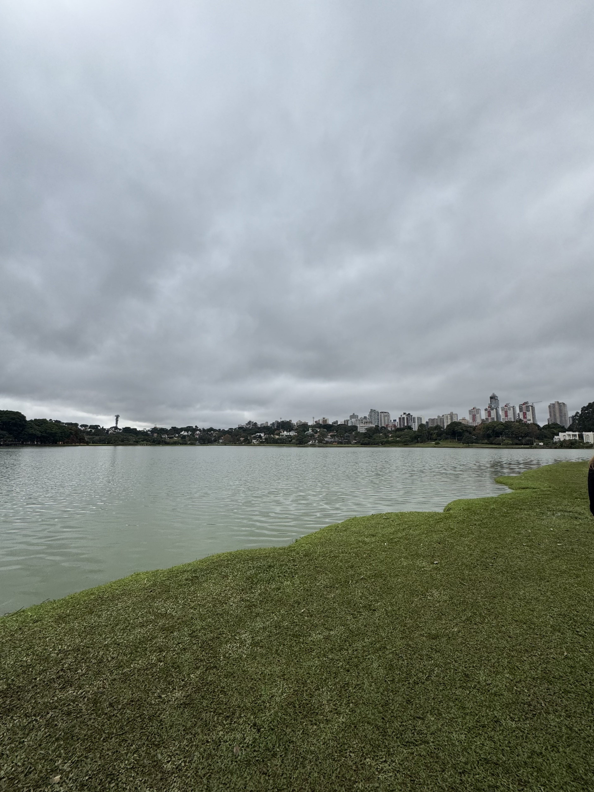
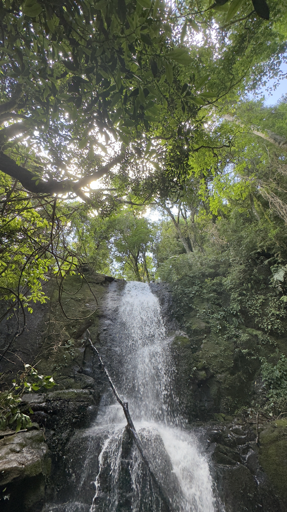

A Água e Seu Papel Fundamental na Agricultura
A água é o recurso mais vital para a agricultura e a sobrevivência das comunidades rurais. Sua disponibilidade influencia diretamente na produtividade, qualidade dos alimentos e sustentabilidade ambiental.
Investir em tecnologias para garantir o acesso e uso eficiente da água é essencial para a segurança alimentar e o desenvolvimento econômico do campo.
Soluções Tecnológicas para o Acesso e Uso da Água
Os poços artesianos são fontes confiáveis de água, permitindo o acesso a águas subterrâneas em regiões rurais. A perfuração e manutenção adequada garantem a qualidade e a sustentabilidade desse recurso.
Além disso, sistemas de captação de água da chuva complementam o abastecimento, reduzindo a dependência de fontes externas.
A irrigação eficiente é essencial para o uso racional da água na agricultura. Técnicas como gotejamento, aspersão controlada e irrigação por sensores reduzem desperdícios e aumentam a produtividade.
A adoção dessas tecnologias contribui para a conservação ambiental e a redução de custos para os produtores.
A gestão adequada dos recursos hídricos é vital para a sustentabilidade no campo. Práticas como recuperação de nascentes, proteção de matas ciliares e manejo integrado da bacia hidrográfica preservam a qualidade e quantidade da água.
A conscientização das comunidades rurais é fundamental para garantir a perpetuidade desses recursos para as futuras gerações.
Desafios e Perspectivas
O acesso à água no meio rural ainda enfrenta desafios como a escassez em períodos de seca, investimentos insuficientes e a degradação ambiental.
No entanto, as inovações tecnológicas, aliadas às políticas públicas eficazes e ao engajamento comunitário, oferecem caminhos para garantir o uso sustentável e o desenvolvimento rural equilibrado.
O Agrinho 2025 promove o diálogo e a capacitação para enfrentar esses desafios e avançar em soluções concretas.